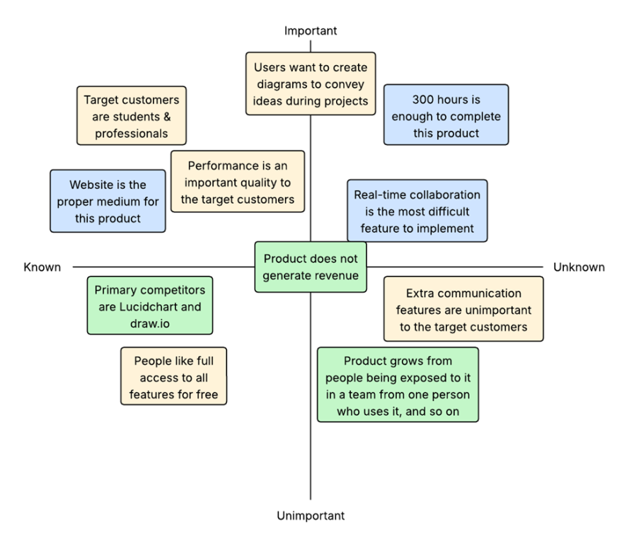
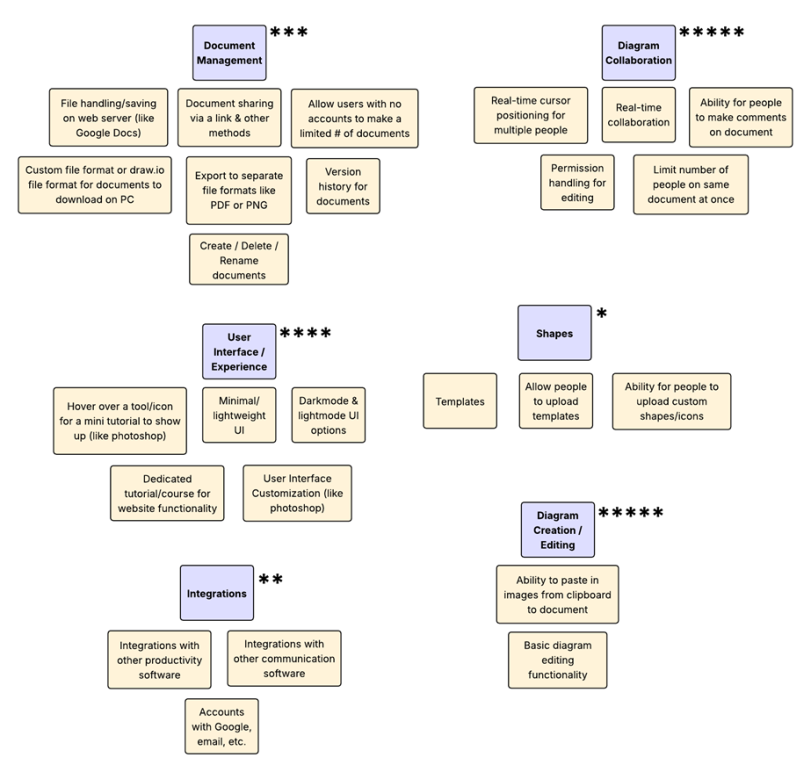

This section displays artifacts relating to the planning of the website.
Assumption mapping is an important activity that I conducted during the discovery phase of the project. The resulting assumption map gave me insight into what aspects of my project I needed to focus on and evaluate further. The evaluation led me to not plan or create communication features for the website, thus helping me avoid over-scoping the project.

Yellow assumptions are desirability related, blue assumptions are feasibility related, and green assumptions are viability related.
Affinity mapping is an important activity that I conducted during the define phase of the project. The resulting affinity map helped me visualize and group features into distinct categories. The distinction allowed me to carefully consider each feature and consider their importance. I was then able to give a prioritization level to each feature category, which set the technical direction for my project.

5 stars represents the most prioritized features, while 1 star represents the least prioritized features.